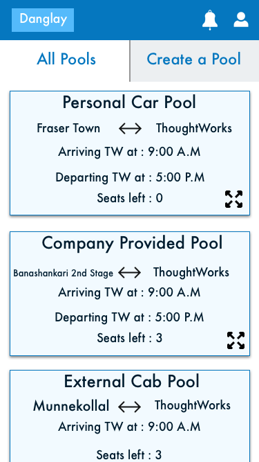
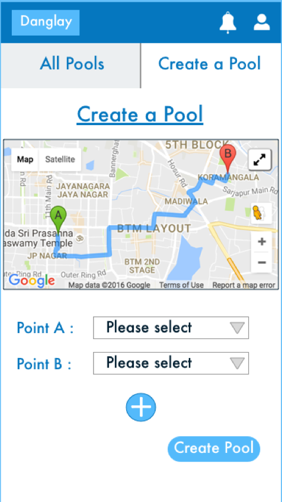
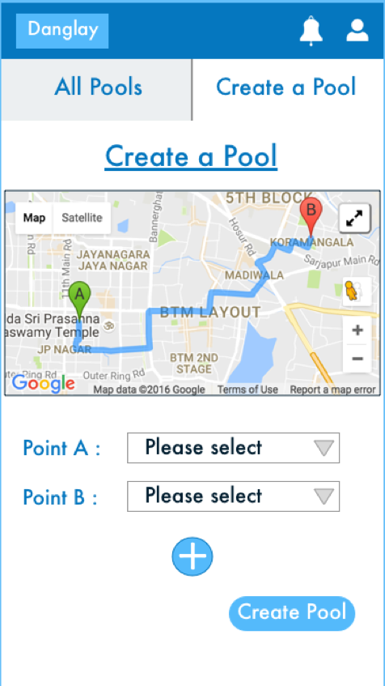
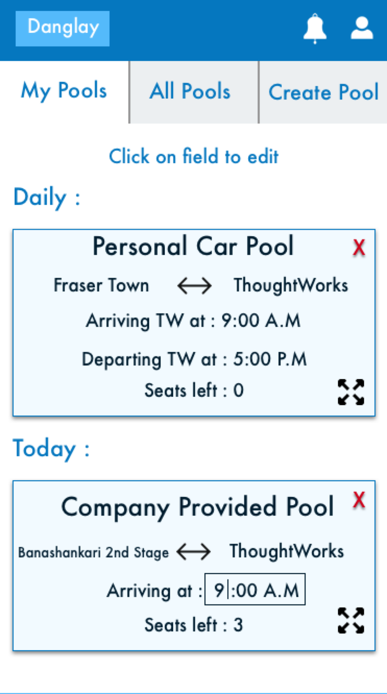
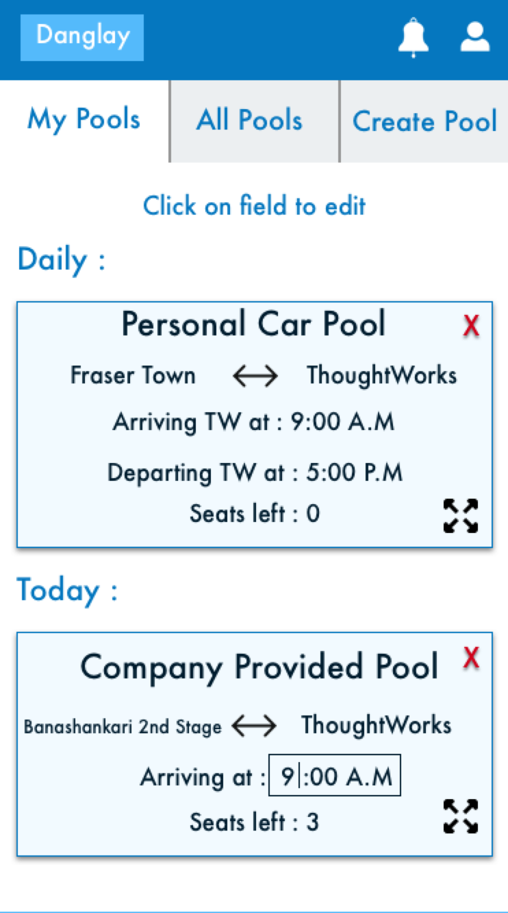

Portfolio
-Kusum Ijari
Danglay
Problem :
As a new joinee to the company, one of the questions I had was if anyone lived close to my place, someone I could travel to and from work with. Asking around it was evident that that a lot of people were looking for the same thing. People usually tried to solve this problem by sending out emails to the entire office asking for people. The problem with this method was that there was no way for new joinees to know of the emails that were sent out before and were forced to send one out again. The information was also not consolidated in a single place and was hard to find. This is why a few of us decided to create an application that could be used to find out information about fellow travellers.
Duration of participation :
3-4 months (Complete project life cycle)
Roles played :
User journey creation, Development
Persona :
After asking around, and from our own experience, we were able to gather common points about the users of this application.
- Drives to work alone and looking for someone to share the ride.
- Has an Okta account.
- Willing to make small route and time adjustments to accommodate the travel partners.
User Journey :
 A user by virtue of being an employee in the office would have an Okta account. The application would be available for them on their dashboard with all the other internal applications. The application would therefore have access to details like name and email address as soon they enter the application.
The home page of the application contains a list of all the current pools allowing the user to browse through them and join one if they find a suitable pool.
A user that has not registered on the application before would be redirected to their profile page to update details like address and phone number which is not available through the Okta account. After updating these details, the join request is automatically sent. A notification and an email is sent out to the current members of the cab pool who can accept or reject that request.
If the user does not find a suitable pool currently they can create their own cab pool. Again if the user is unregistered, they are redirected to be registered.
A user can update their profile details at any time.
A user can leave a pool at any time.
A user by virtue of being an employee in the office would have an Okta account. The application would be available for them on their dashboard with all the other internal applications. The application would therefore have access to details like name and email address as soon they enter the application.
The home page of the application contains a list of all the current pools allowing the user to browse through them and join one if they find a suitable pool.
A user that has not registered on the application before would be redirected to their profile page to update details like address and phone number which is not available through the Okta account. After updating these details, the join request is automatically sent. A notification and an email is sent out to the current members of the cab pool who can accept or reject that request.
If the user does not find a suitable pool currently they can create their own cab pool. Again if the user is unregistered, they are redirected to be registered.
A user can update their profile details at any time.
A user can leave a pool at any time.
Some of the initial wireframes created by me and another team member are below:


Learnings :
-
Breaking down the solution we had into small tasks that can be done parallely. Breaking them up into smaller tasks allowed us to get feedback sooner and make any changes needed faster.
-
There were times when we got carried away with some ideas, but prioritising and figuring out what can be feasibly done, given the resource and time constraints was something that we came to learn.
-
Set up of infrastructure of an application from scratch, including which tech stack to use, after careful consideration of multiple features like performance, necessity and cost.
-
Ruby on rails.
-
Bootstrap.
Future plans :
After feedback from users, we found that the things they would like to see in the future is to be able to book daily cabs. Keeping this in mind, I created some more mock ups, playing around with the UI a little more as well.



 

 


Trainline
Description :
A leading train ticket selling retailer in the UK.
Duration of Participation :
3 - 4 months.
Role played :
Developer
Learnings :
-
It was a huge infrastructure and system and understanding this system in itself was a challenge, but once I was got a grasp on it, I was able to understand what goes into creating a stable infrastructure this huge.
-
Along with the infrastructure, the codebase also was immense and legacy. Being on this project helped me to understand how to wade through this large codebase. I also learnt the importance of well designed code, as it is clearly visible in large codebases like these where which require the code to be self - explanatory and easy to navigate.
-
Half the team was located in a different country in a different time zone. Working on this project helped me to understand how to coordinate and work with the team remotely.
-
I was able to get a peek into the retail industry and some of the business decisions that go into it.
-
C#
-
Team City
Operational Insights
Description :
The visualisation, bringing together and forecasting of all common operational information of ThoughtWorks in one place.
Duration of Participation :
6 months to current.
Role played :
Developer
Learnings :
-
This project allowed us to be in close contact with the users, as they were all employees of the company itself. This resulted in receiving continual feedback from the users allowing us to modify the product as we went along and really driving us to make user centric decisions.
-
I got chances to shadow the Experience Designer on the team and understand the design process. I also shadowed user interviews which gave me a chance to see how the user directly interacts with the product for their use cases.
-
Understanding factors like revenue, gross margins, utilisation etc and how they factor into business decisions.
-
The team adapted the Kanban Process after which we were able to visibly see the increased rate in delivery of features.
-
The infrastructure went through a migration to Amazon Web Services(AWS) which gave me the opportunity to help set up the systems from scratch in a new environment.
-
Clojure (Functional Programming)
-
Angular JS